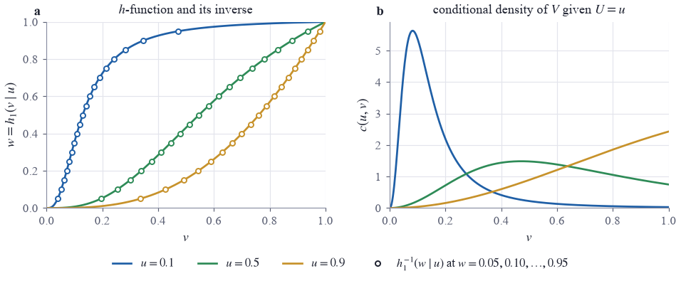
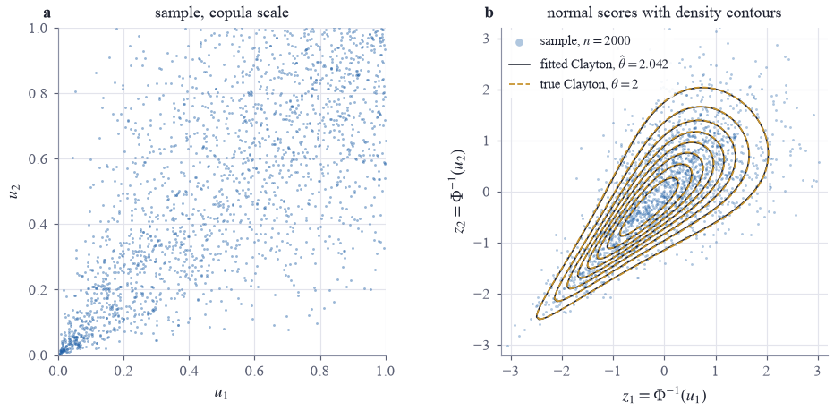

Pair copula basics¶
Program: example/ex01_pair_copula.f90, example/python/ex01_pair_copula.py,
example/r/ex01_pair_copula.R · Topics: fv_bicop, density, inverse
h-function, simulation, maximum likelihood, BIC family selection.
The program works with one bivariate copula from start to finish: it evaluates a Clayton copula, draws a sample from it, refits the parameter, and finally lets fortvine choose the family without being told.
Code¶
! ex01_pair_copula -- one bivariate copula: evaluate, simulate, fit a known family, select a family.
program ex01_pair_copula
use fortvine_api
implicit none
integer :: ns
integer, allocatable :: seed(:)
integer, parameter :: dp = kind(1.0d0), n = 2000
type(fv_bicop) :: truth, fitted, chosen
real(dp) :: u1(n), w(n), u2(n), dens(3)
! a Clayton copula with theta = 2 (Kendall's tau = theta / (theta + 2) = 0.5)
truth%family = FV_CLAYTON; truth%par = [2.0_dp, 0.0_dp, 0.0_dp]
! density at three points
call truth%pdf([0.1_dp, 0.5_dp, 0.9_dp], [0.1_dp, 0.5_dp, 0.9_dp], dens)
print '(a,3f10.4)', 'Clayton(2) density on the diagonal:', dens
! simulate by inverse Rosenblatt: u2 = h^-1(w | u1) with independent uniforms u1, w
call random_seed(size=ns); allocate(seed(ns)); seed = 20261116; call random_seed(put=seed) ! reproducible sample
call random_number(u1); call random_number(w)
call truth%hinv1(u1, w, u2)
print '(a,f7.3)', 'empirical Kendall tau:', fv_kendall_tau(u1, u2)
! maximum likelihood fit of a given family
fitted%family = FV_CLAYTON
call fitted%fit(u1, u2)
print '(a,f8.4,a,f10.2)', 'fitted theta:', fitted%par(1), ' log-likelihood:', fitted%loglik
! family selection by BIC over the default family set (with rotations)
call chosen%select(u1, u2)
print '(a,a,a,i0,a,3f8.3)', 'selected: ', trim(fv_fam_name(chosen%family)), ' rotation ', chosen%rotation, &
' par', chosen%par
end program ex01_pair_copula
"""ex01_pair_copula -- one bivariate copula: evaluate, simulate, fit a known family, select a family.
The Python version of example/ex01_pair_copula.f90 (pip install ./python).
"""
import numpy as np
import fortvine as fv
n = 2000
# a Clayton copula with theta = 2 (Kendall's tau = theta / (theta + 2) = 0.5)
truth = fv.Bicop("clayton", 0, [2.0])
# density at three points
g = np.array([0.1, 0.5, 0.9])
dens = truth.pdf(np.column_stack([g, g]))
print("Clayton(2) density on the diagonal:" + "".join(f"{x:10.4f}" for x in dens))
# simulate by inverse Rosenblatt: u2 = h^-1(w | u1) with independent uniforms u1, w
rng = np.random.default_rng(20261116) # reproducible sample
u1, w = rng.random(n), rng.random(n)
u2 = truth.hinv1(np.column_stack([u1, w]))
u = np.column_stack([u1, u2])
print(f"empirical Kendall tau:{fv.kendall_tau(u1, u2):7.3f}")
# maximum likelihood fit of a given family
fitted = fv.Bicop("clayton").fit(u)
print(f"fitted theta:{fitted.parameters[0]:8.4f} log-likelihood:{fitted.loglik():10.2f}")
# family selection by BIC over the default family set (with rotations)
chosen = fv.Bicop().select(u)
par = np.zeros(3); par[:chosen.npars] = chosen.parameters
print(f"selected: {chosen.family} rotation {chosen.rotation} par" + "".join(f"{p:8.3f}" for p in par))
# ex01_pair_copula -- one bivariate copula: evaluate, simulate, fit a known family, select a family.
# The R version of example/ex01_pair_copula.f90 (R CMD INSTALL r).
library(fortvine)
n <- 2000
# a Clayton copula with theta = 2 (Kendall's tau = theta / (theta + 2) = 0.5)
truth <- bicop_dist("clayton", 0, 2)
# density at three points
g <- c(0.1, 0.5, 0.9)
dens <- dbicop(cbind(g, g), truth)
cat("Clayton(2) density on the diagonal:", sprintf("%10.4f", dens), "\n", sep = "")
# simulate by inverse Rosenblatt: u2 = h^-1(w | u1) with independent uniforms u1, w
set.seed(20261116) # reproducible sample
u1 <- runif(n); w <- runif(n)
u2 <- hbicop(cbind(u1, w), 1, truth, inverse = TRUE)
u <- cbind(u1, u2)
cat(sprintf("empirical Kendall tau:%7.3f\n", cor(u1, u2, method = "kendall")))
# maximum likelihood fit of a given family
fitted <- bicop(u, family_set = "clayton", rotation = 0)
cat(sprintf("fitted theta:%8.4f log-likelihood:%10.2f\n", fitted$parameters, fitted$loglik))
# family selection by BIC over the default family set (with rotations)
chosen <- bicop(u, family_set = "all", selcrit = "bic")
par <- c(chosen$parameters, 0, 0, 0)[1:3]
cat("selected: ", chosen$family, " rotation ", chosen$rotation, " par",
sprintf("%8.3f", par), "\n", sep = "")
Output¶
The first line is deterministic and the same in all three languages. The other three depend
on the random sample. Each program fixes its seed (random_seed(put=seed) in Fortran,
np.random.default_rng(seed) in Python, set.seed() in R), so its output is reproducible,
but the three generators produce different uniforms and so slightly different values around
the same truth. Another Fortran compiler has another intrinsic generator as well. The
numbers in the walk-through are those of the Fortran run.
Walk-through¶
Defining a copula¶
An fv_bicop is a plain derived type: family is an integer code (named constants
FV_GAUSSIAN, FV_CLAYTON, ... in fortvine_api), rotation is 0, 90, 180 or 270, and
par(3) holds up to three parameters with unused slots left at 0. Nothing has to be
initialised or allocated. In Python and R the family is given by its name (as
fv_fam_name spells it, any case) or its integer code, and only as many parameters as the
family has. The Clayton copula has the distribution function and density
with Kendall's \(\tau = \theta / (\theta + 2)\), i.e. \(\tau = 0.5\) for \(\theta = 2\).
Evaluating the density¶
All evaluation routines take arrays of points (Fortran: two vectors; Python and R: an
\(n \times 2\) array): here the three diagonal points
\((0.1, 0.1)\), \((0.5, 0.5)\), \((0.9, 0.9)\). At the centre the formula gives
\(3 \cdot 0.25^{-3} \cdot 7^{-5/2} = 1.4810\), as printed. The density is largest near the
origin (5.37 at \((0.1, 0.1)\)) because Clayton has lower tail dependence,
\(\lambda_L = 2^{-1/\theta} \approx 0.71\); at \((0.9, 0.9)\) it is smaller (2.16) since
\(\lambda_U = 0\). The same calling pattern serves logpdf, cdf, hfunc1, hfunc2,
hinv1 and hinv2 (in R: dbicop(u, b, log = TRUE), pbicop(u, b) and
hbicop(u, 1 or 2, b, inverse =)). Long arrays (more than 4096 points) are evaluated in parallel.
Simulating¶
hinv1(u1, w, u2) returns the \(v\) that solves \(h_1(v \mid u_1) = w\), where
\(h_1(v \mid u) = \partial C(u, v)/\partial u\) is the conditional distribution of \(V\) given
\(U = u\). If \(u_1\) and \(w\) are independent uniforms, \((u_1, u_2)\) is a draw from the copula:
the inverse Rosenblatt transform in two dimensions. For Clayton, fortvine uses the closed
form
written so that the factor \(w^{-\theta/(1+\theta)} - 1\) is computed with expm1 and nothing
cancels for small \(u\).

The empirical Kendall tau of the 2000 draws (0.514 with the fixed seed) scatters around the theoretical 0.5 with a standard error of roughly 0.01.
Fitting a known family¶
fit keeps family and rotation and estimates par by maximum likelihood; the
maximised log-likelihood goes to fitted%loglik. In R, bicop() fits a single family when
family_set holds one family and rotation is given; without rotation it selects. Internally the start value comes from
inverting Kendall's tau, and the likelihood is maximised by Fisher-scoring steps with exact
parameter scores (see Exact parameter scores). Passing an
fv_controls with method = FV_ITAU instead returns the tau-inversion estimate itself
(method="itau" in Python, par_method = "itau" in R), and weights= gives observation
weights (weights= in Python and R; example).

Selecting a family¶
select with no controls tries the default candidate set: the 23 hand-coded parametric
families 0..22 (every parametric family except the slow-to-fit t-EV). A rotatable
family is tried in the two rotations that match the sign of the sample's Kendall tau
(0 and 180 degrees for positive dependence, 90 and 270 for negative). With preselect
on (the default), the correlations of the normal scores in the lower and the upper part of
the sample are compared, as in vinecopulib, and a rotation whose tail sits on the weaker
side is dropped before fitting. Every remaining candidate is fitted and the one with the
smallest BIC,
\(-2\ell + k \log n\), wins. The data came from Clayton, and Clayton without rotation is
recovered with the same parameter as the dedicated fit.
Variations¶
Restrict or extend the candidates with a control object (keyword arguments in Python and R). See Controls for every field.
Evaluate a rotated copula: set the rotation to 90 before calling pdf/hinv1; a 90 or
270 degree rotation of Clayton models negative dependence with a tail in an off-diagonal
corner (Rotations and asymmetry).
The distribution function \(C\) itself is in closed form for every family except the Gaussian and Student ones, which are integrated by Gauss-Legendre quadrature over their exact h-function.